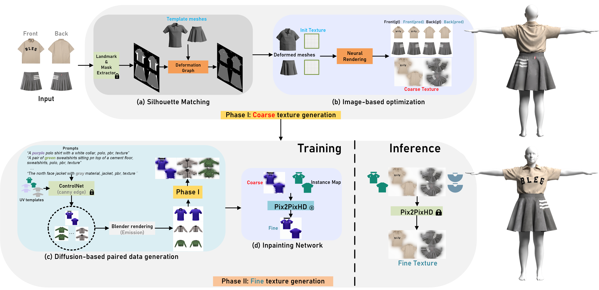
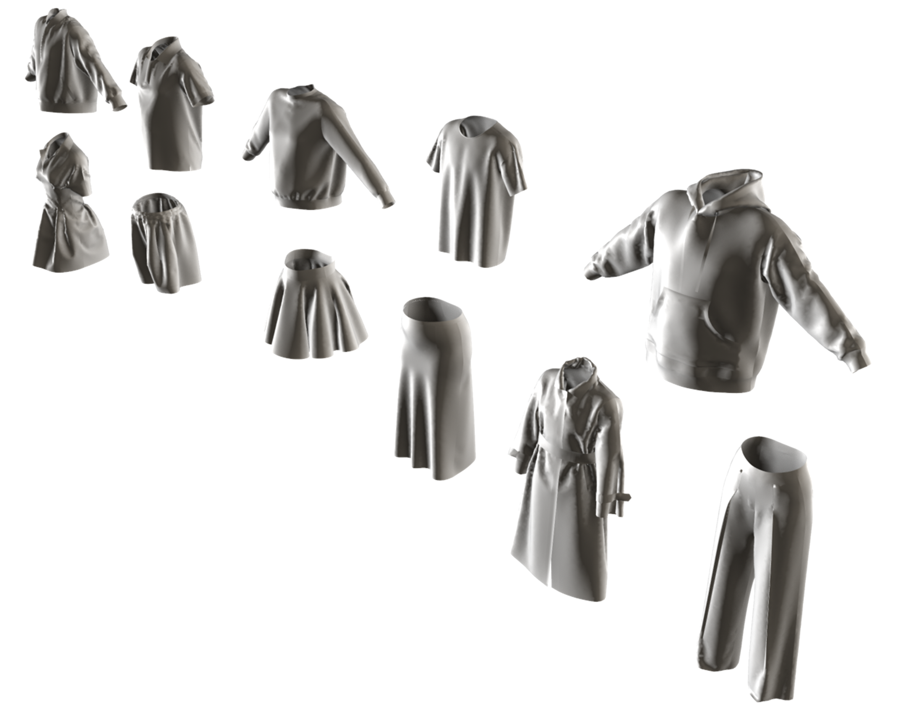
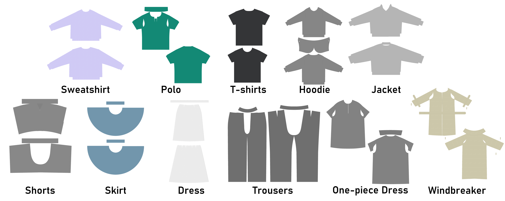

Fabricating and designing 3D garments has become extremely demanding with the increasing need for synthesizing realistic dressed persons for a variety of applications, e.g. 3D virtual try-on, digitalization of 2D clothes into 3D apparel, and cloth animation. It thus necessitates a simple and straightforward pipeline to obtain high-quality texture from simple input, such as 2D reference images. Since traditional warping-based texture generation methods require a significant number of control points to be manually selected for each type of garment, which can be a time-consuming and tedious process. We propose a novel method, called Cloth2Tex, which eliminates the human burden in this process.
Cloth2Tex is a self-supervised method that generates texture maps with reasonable layout and structural consistency. Another key feature of Cloth2Tex is that it can be used to support high-fidelity texture inpainting. This is done by combining Cloth2Tex with a prevailing latent diffusion model (LDM). We evaluate our approach both qualitatively and quantitatively and demonstrate that Cloth2Tex can generate high-quality texture maps and achieve the best visual effects in comparison to other methods.
Cloth2Tex is composed of two phase: (1) Coarse texture generation and (2) Fine texture completion. Where Phase I is to determine the 3D garment shape and coarse texture. We do this by registering our parametric garment meshes onto catalog images using a neural mesh renderer. The pipeline’s Then Phase II is to recover fine textures from the coarse estimate of Phase I. We use image translation networks trained on large-scale data synthesized by pre-trained latent diffusion models.
For the sake of both practicality and convenience, we design cloth template mesh (with fixed topology) for common garment types: (T-shirts, sweatshirts, baseball jackets, hoodies, shorts, trousers and etc). The noteworthy thing is that we stipulate requirements of the template mesh are as follows: vertices V less than 10,000, uniform mesh topology, and integrity of UV. The vertex number of all templates ranges between skirt (6,116) to windbreaker (9,881).
The template meshes and corresponding UV used in Cloth2Tex are shown below:
 Schematic diagram of Phase I (combining deformation graph with neural rendering).
In Phase II, we have two main steps: the first one is synthetic paired data generation pipeline that built on top of ControlNet, Blender and manually-crafted template meshes with sleeve-shoulder correlation blendshapes.
We use ControlNet in synthesizing high-quality texture maps and use it for later paired data collection.
Since Cloth2Tex needs paired reference images as input: front and back view of a garment. We use Blender EEVEE (Emission Only) to render the front&back view image of each garment with specified textures. A critical step of our approach is to perform data augmentation so that the impainting network captures invariant features instead of details that differ between synthetic images and testing images, which do not generalize. To this end, we vary the blendshape parameters of the template mesh to generate 2D catalog images in different shapes and pose configurations and simulate self-occlusions, which frequently exist in reality.
The final step is to train a proper inpainting or image completion network on the paired coarse-fine texture yielded in above step. As shown, the best method in our task is Pix2PixHD.
Real-world people Try-on. It can be seen that the animation result is vivid and thus make Cloth2Tex suitable for future VR/AR try-on.
3D Animation result, we use Style3D for clothing animation. According to our survey, the animation results are eye-appealing to the general public.
@misc{gao2023cloth2tex,
title={Cloth2Tex: A Customized Cloth Texture Generation Pipeline for 3D Virtual Try-On},
author={Daiheng Gao and Xu Chen and Xindi Zhang and Qi Wang and Ke Sun and Bang Zhang and Liefeng Bo and Qixing Huang},
year={2023},
eprint={2308.04288},
archivePrefix={arXiv},
primaryClass={cs.CV}
}